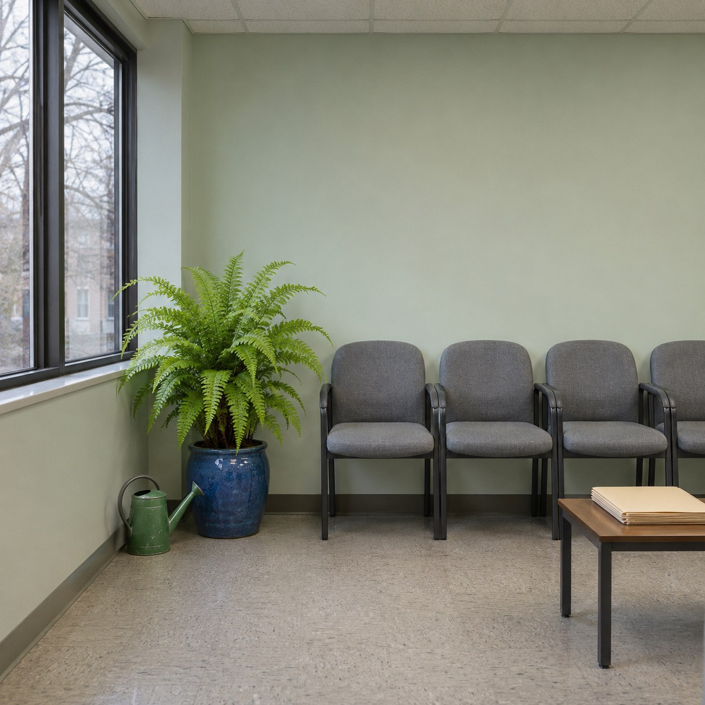
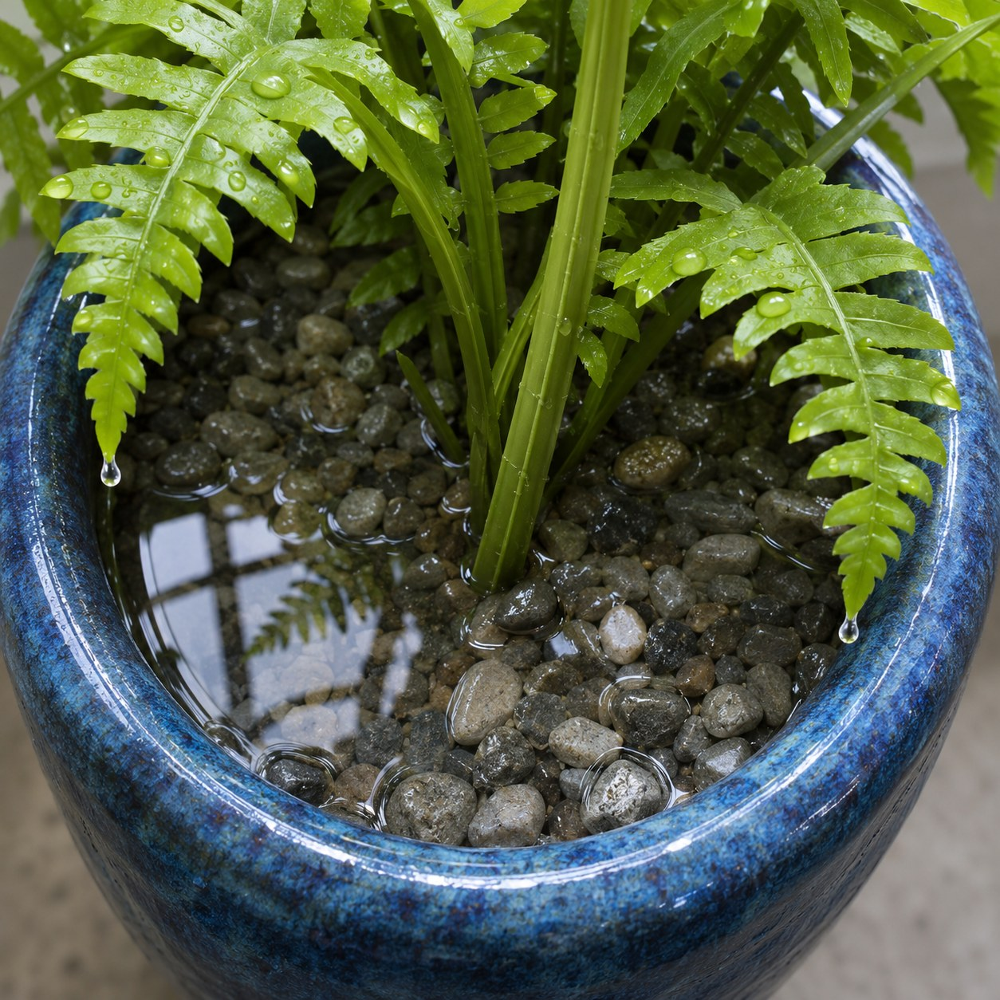

Kept Green


In the waiting room of a small dental practice there is a plastic fern in a blue pot by the window. Every Monday for a year, with the receptionist's leave, I watered it.
It needed nothing. It was green when I began and green when I stopped. The water ran down stems that still carry the thin seam where the mould closed, and stood among the grey pebbles glued over the soil that is not there. By the next Monday it was always gone.
People asked why. Some laughed. One woman, waiting with a hand pressed to her jaw, told me I was wasting my time, and then watched me until the can was empty.
We judge care by what it does. The plant grows, the child thrives, the patient mends. Take the result away and look at what is left: someone with a watering can, once a week, paying attention to one thing in a room. If that is not care, I am not sure what the rest of it was.
In Philip K. Dick's Do Androids Dream of Electric Sheep?, Rick Deckard keeps a sheep on the roof of his building. The real one died, so he looks after an electric one in its place, and hides from the neighbours what it is. His care is a disguise. Mine had nothing to hide. Anyone could see the fern was plastic, and I watered it anyway, in plain view, at the hour the morning patients came in.
The water did go somewhere, in the end. With nowhere else to go, it rose a little at a time into the warm, still air of that small room, and the people waiting there, between the calling of one name and the next, breathed it in.